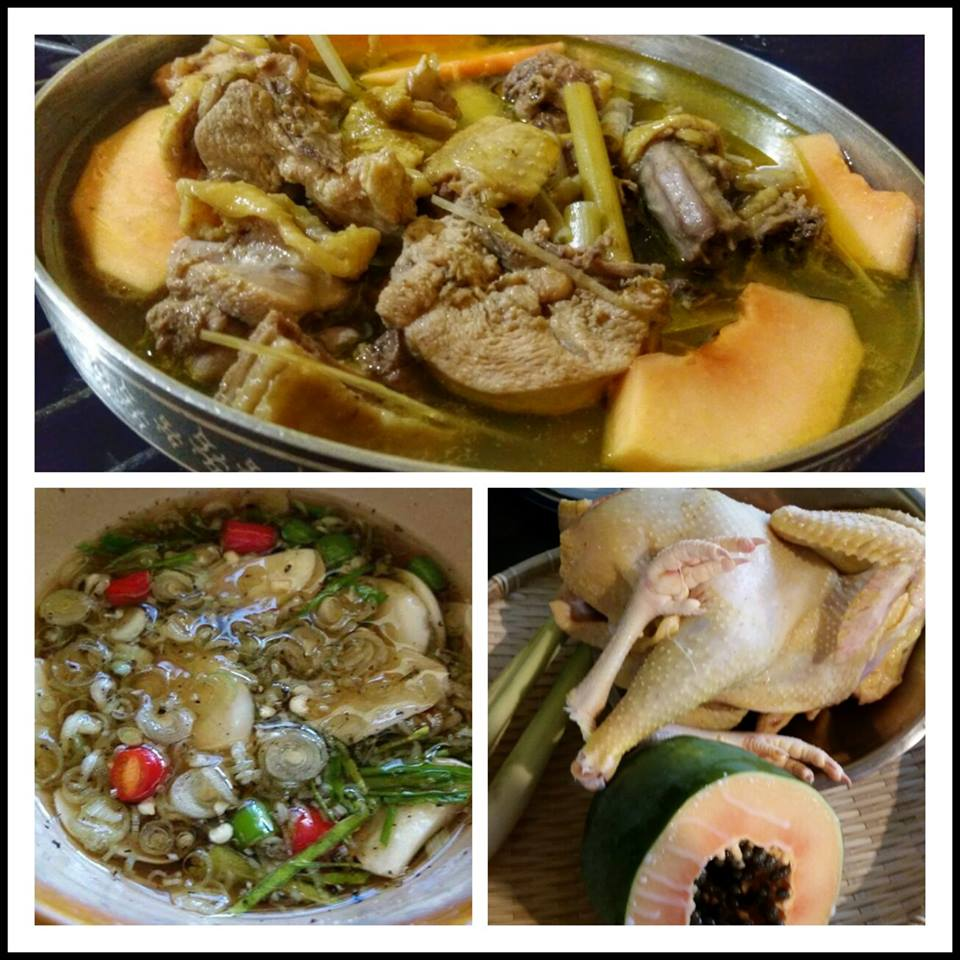

Gà nấu sả

- Khẩu phần 4
- Chuẩn bị 15 phút
- Thực hiện 15 phút
Nguyên liệu
- 2 cái đùi gà góc tư, chặt khúc vừa ăn
- 2 cây sả, đập dập, cắt khúc
- 100g nấm bào ngư, rửa sạch
- ¼ củ cà rốt, cắt miếng vừa ăn
- 1 nhánh hành lá, cắt khúc
- 1 nhánh ngò rí, cắt khúc
- 3 chén nước lọc
- 3 muỗng cà phê Hạt nêm từ Nấm và Rong biển
- ½ muỗng cà phê muối
- ¼ muỗng cà phê tiêu xay
- Nước mắm chấm + ớt
Hướng dẫn thực hiện
- Luộc sơ thịt gà với ít muối.
- Đun sôi nước lọc, cho thịt, sả cây vào nấu khoảng 10 phút cho chín.
- Nêm Hạt nêm từ Nấm và Rong biển và thêm nấm bào ngư, cà rốt vào
nồi, nấu tiếp 5 phút nữa là được.
- Múc canh gà nấu sả vào tô, thêm tiêu xay và trang trí với hành tây, ngò
rí.
- Dùng nóng với nước mắm chấm và ớt.